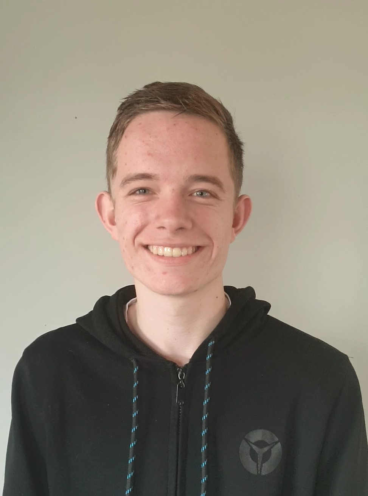

Ik ben Niek Schlooz en ik ben 19 jaar. Ik woon in een klein gehucht genaamd Magrette in Zeeuws-Vlaanderen. Ik ben geboren in Eindhoven. Ik heb een zusje die nu naar 6 vwo gaat. Ik hou heel erg van om naar andere landen te gaan en hun culturen te ontdekken. Meestal als ik naar een ander land ga, vind ik het prettigste om in een tent te slapen omdat je dan een meer vakantie gevoel krijgt. Ik ben al naar vele landen geweest en elk land heeft weer zijn eigen speciale dingen.
Wie ben ik?
Niek Schlooz
Mijn hobby's zijn formule 1 kijken, voetballen en klussen. Ik heb het Max Verstappen virus gekregen van mijn achternicht die me meenam naar de Jumborace dagen in Zandvoort. Hier zag ik Max Verstappen in een Red Bull auto rijden waardoor ik de sport heel leuk vind om te volgen. Ik ben daarnaast altijd geïnteresseerd in de ICT-branche. Hierdoor ben ik nog meer gefocust op dit jaar om zoveel mogelijk te leren.
Ik heb daarnaast een lieve hond en kat. De hond heet Guus en is een Drentse patrijs. De kat heet Tom.